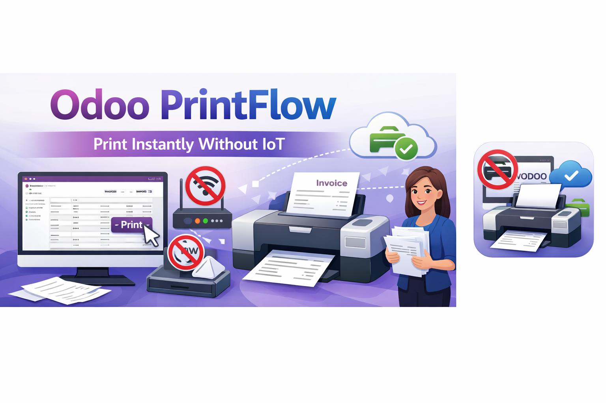
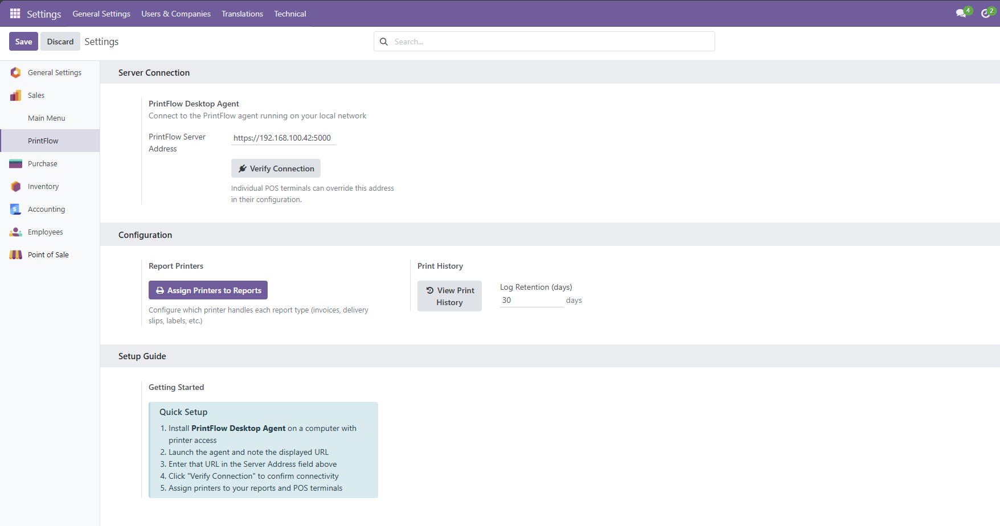
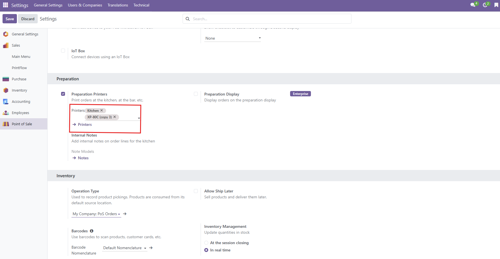
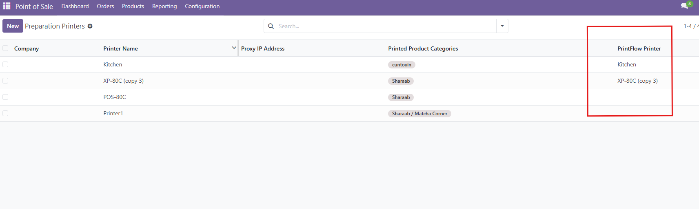

Showcase
See PrintFlow in action — from settings and agent setup to POS and report printing.

PrintFlow in the main menu

Global PrintFlow settings & connection

PrintFlow Desktop Agent

Agent connection (HTTPS / SSL)

Verify connection success

POS terminal PrintFlow configuration

POS receipt printer mapping

Kitchen / preparation printers list

Preparation printer (categories & target)

Assign reports to PrintFlow printers